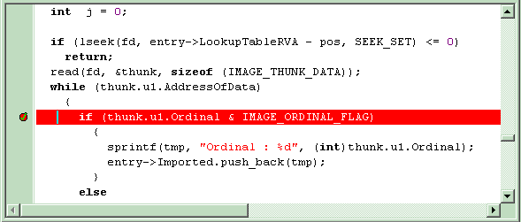
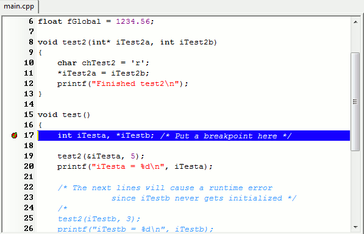

You can use breakpoints to pause your program at a certain instruction
(i.e. at a line of code).
To
add a breakpoint, first select the line of code where you want to pause
by simply positioning the text cursor on it. Now, click on the Debug
menu, then on Toggle Breakpoint (shortcut : Ctrl+F5).
Clicking on the gutter (at the left of the editor) in front of your
line will have the same effect. You can set multiple breakpoints.
Clicking on the checkmark in the gutter will remove the breakpoint.
Note that if the breakpoint is set, the line will be highlighted red
and a checkmark will appear in the left gutter.

Now re-run the debugger (shortcut: F8)
. wxDev-C++ will run your program via the debugger and will warn you
that your breakpoint was reached by changing the line color to blue.

In the next steps we'll see how to examine the variables and step
through the program's execution.